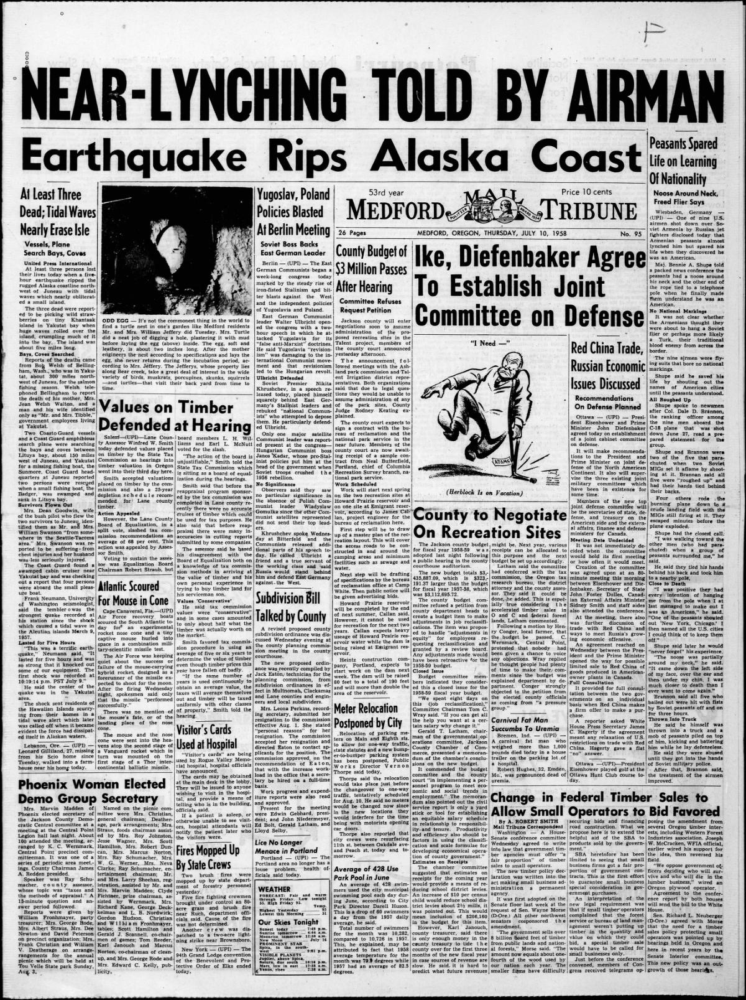
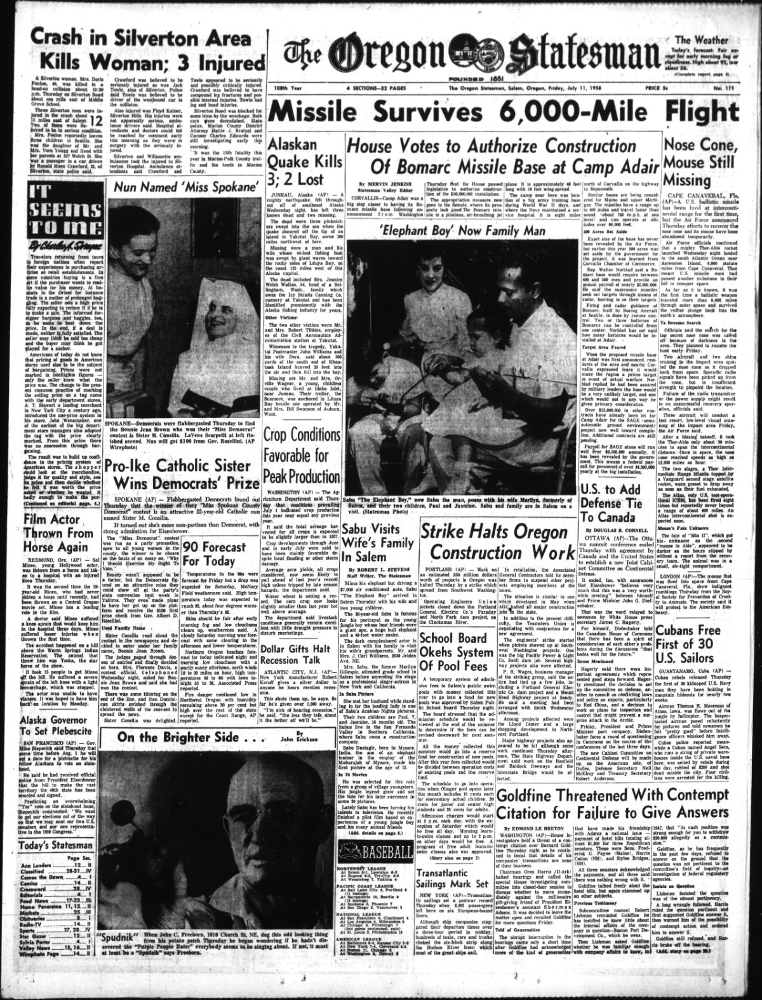

HN HN-623 · July 11, 1958 · Disasters, Accidents & Emergencies > Floods, Tsunamis & Extreme Weather > Tsunamis
Source: Decatur Daily Democrat, p. 8 — original page; National Park Service, Lituya Bay tsunami research.
Report: “At Least 3 Killed by Huge Tidal Wave†described fishing vessels missing after earthquake-driven waves near Yakutat and Lituya Bay, with confused early reports of deaths and boats lost.
Assessment: The July 9 Lituya Bay rockslide tsunami generated a documented 524-metre (1,719-foot) maximum run-up on the opposite slope—not an open-ocean wave traveling at that height. Initial accounts mixed locations and missing-person reports. The modern reconstruction identifies the landslide and its localized, exceptional run-up.
Authentic scans retrieved from Historic Oregon Newspapers (University of Oregon). Article crops are located using the archive's own OCR word coordinates and rendered at native crop resolution; page scans are reduced-size access renditions. No images were generated, mocked, or retouched.


Not yet acquired. Queued for provider-specific acquisition testing (see source-acquisition manifest).
URL (preserved verbatim): https://newspapers.library.in.gov/?a=d&d=DCDD19580711.1.8
Saved research report: Historical_Newspaper_Event_Research_603-627_2026-10-23.md
Evidence note: A newspaper report means a historical publication made a claim; it does not establish that claim as fact. Contemporary reporting is separated from later scholarly context and our own assessment.